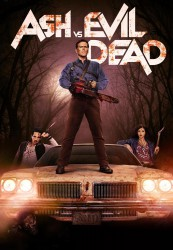 
 IMDB-Wertung: 8.6 / 10
IMDB-Wertung: 8.6 / 10  Metascore: 0
Metascore: 0 
Die Serie versteht sich als Fortsetzung zu "Tanz der Teufel" Teil 1-3 und setzt 30 Jahre nach den Ereignissen des ersten Films ein. Ash setzt einmal mehr die Mächte des Bösen frei – und diesmal drohen sie, die ganze Menschheit zu vernichten. Ausgestattet mit seiner treuen Schrotflinte und der ikonischen Kettensäge stellt sich Ash den Dämonen. Unterstützt wird er dabei unter anderem von Ray Santiago, Dana Delorenzo, Jill Marie Jones und Lucy Lawless. Das Ergebnis ist ein ebenso lustiges wie blutiges Gemetzel, das für Fans der Reihe und Bewunderer von Bruce Campbell keine Wünsche offen lässt.
Jahr: 2015
Dauer: 40 Minuten
FSK: 18
Land: USA Studio: Starz!Tonspuren:
Untertitel: Deutsch, Englisch,
Auflösung: 720p (1280x720) Größe: 128000 MB
Genre: Action, Horror, Komödie, Fantasy, TV-Serie
Regisseur: Tony Tilse, Michael J. Bassett, Rick Jacobson, David Frazee, Michael Hurst, Mark Beesley,  Sam Raimi
Sam Raimi
Drehbuch: Arild Østin Ommundsen
Soundtrack:
Darsteller:
- 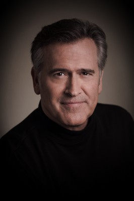 Bruce Campbell als Ashley 'Ash' J. Williams
 Ray Santiago als Pablo Simon Bolivar
Ray Santiago als Pablo Simon Bolivar- Dana DeLorenzo als Kelly Maxwell
- 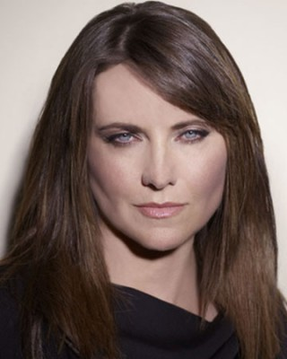 Lucy Lawless als Ruby Knowby
- Jill Marie Jones als Amanda Fisher
- 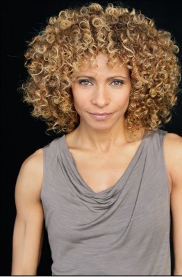 Michelle Hurd als Linda B. Emery
- 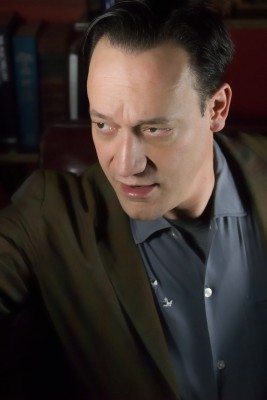 Ted Raimi als Chet Kaminski
- Stephen Lovatt als Sheriff Thomas Emery
- 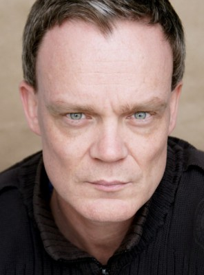 Joel Tobeck als Baal
- Pepi Sonuga als Lacey Emery
- 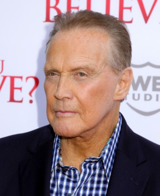 Lee Majors als Brock Williams
- 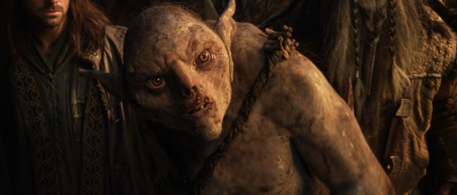 Stephen Ure als Drunk
 Samara Weaving als Heather
Samara Weaving als Heather- Ben Fransham als Eligos
- 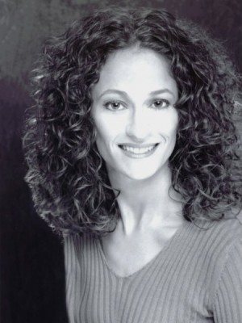 Ellen Sandweiss als Cheryl
- Phil Peleton als Kelly's Father
- Hemky Madera als Brujo
- Peter Feeney als Lem
- Damien Garvey als Mr. Roper
- 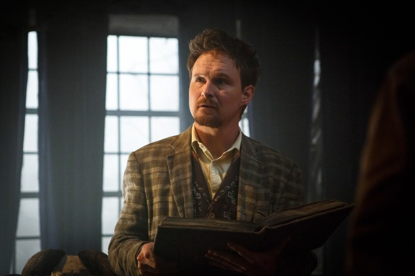 Kelson Henderson als Lionel Hawkins
- Indiana Evans als Engaged Hiker
- Ido Drent als Brad
- Nicholas Hope als Professor Raymond Knowby
- Taylor Barrett als Tyler
- Sara West als Tanya
- James Russell als Blake
- Kayleigh Haworth als Frumpy Girl
- Kelvin Taylor als Orderly #2
- 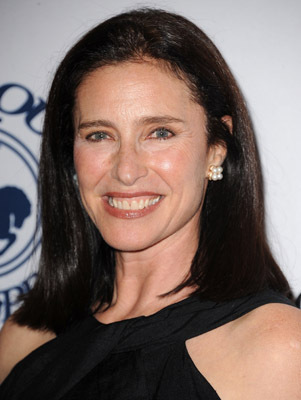 Mimi Rogers als Suzy Maxwell
- Mike Edward als Carson
 Mark Mitchinson als Crosby
Mark Mitchinson als Crosby- Sian Davis als Vivian Johnson
- Mike Estes als Austin
- Alison Quigan als Henrietta Knowby
- Milo Cawthorne als Delmont
- Rebekkah Farrell als Linda's Head
- Sophia Johnson als Hannah
- Leand Macadaan als Coroner
- Benjamin Teh als Orderly #1
- Shoshana McCallum als Townsperson #1
- Shara Connolly als TV Reporter
- Campbell Cooley als Townsperson #2
- 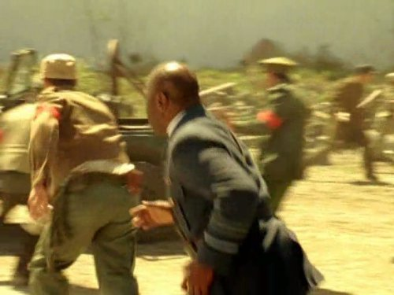 James Gaylyn als Waiter
- Joseph Wycoff als Phil
- Jared Turner als Eligos
- Aron Eastwood als Maintenance Man
- Samuel Thomas als Crazy Patient
- Marissa Stott als Tattoo Girl
- Jacqueline Lee Geurts als Crazy Patient
 Bridget Hoffman als Little Lori
Bridget Hoffman als Little Lori
Datei: X:\FSK18-Serien\Ash vs Evil Dead\S01\Ash vs Evil Dead S01E01 El Jefe.mkv seit 17.01.2017
Festplatte: FSK18
 Es gibt insgesamt 17 Filme in der Gruppe 'FSK18-Serien'
Es gibt insgesamt 17 Filme in der Gruppe 'FSK18-Serien'
")